全部来自冻结PFOS源表；跨背景程序、条件背景校准、共享坐标三类示例来自新整合分析dry-run。这里验证绘图接口，不代表上游论文复现或新增生物学结论。一个项目同一类图固定一个变体。使用说明
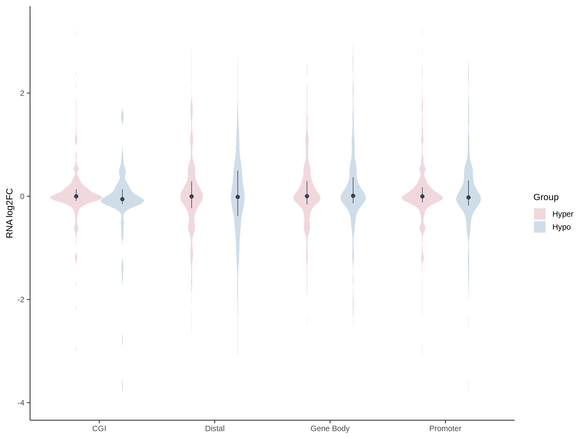
生物学意义：比较甲基化方向及区域类别对应的RNA效应分布。
数据分布特征：冻结3173行；填色透明度0.30，无轮廓或箱体；点为中位数，0.25mm线为Q1–Q3。
最终结论：描述基因层分布；四分位线不是置信区间或动物级检验。
原生PDF · 执行回执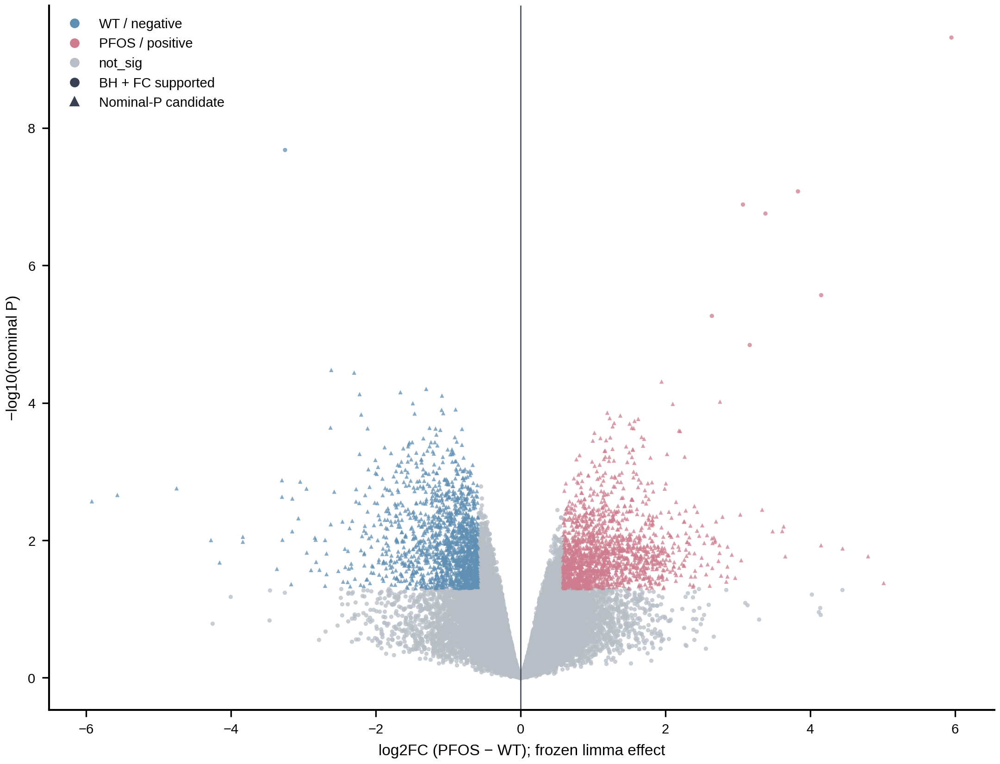
生物学意义：沿用已冻结代谢特征分类，观察效应与统计支持。
数据分布特征：26,359特征全部显示；方向用蓝粉、not_sig灰，robust圆形、exploratory三角；P与BH来自原模型。
最终结论：未知身份仍称代谢特征；不新增统计检验。
原生PDF · 执行回执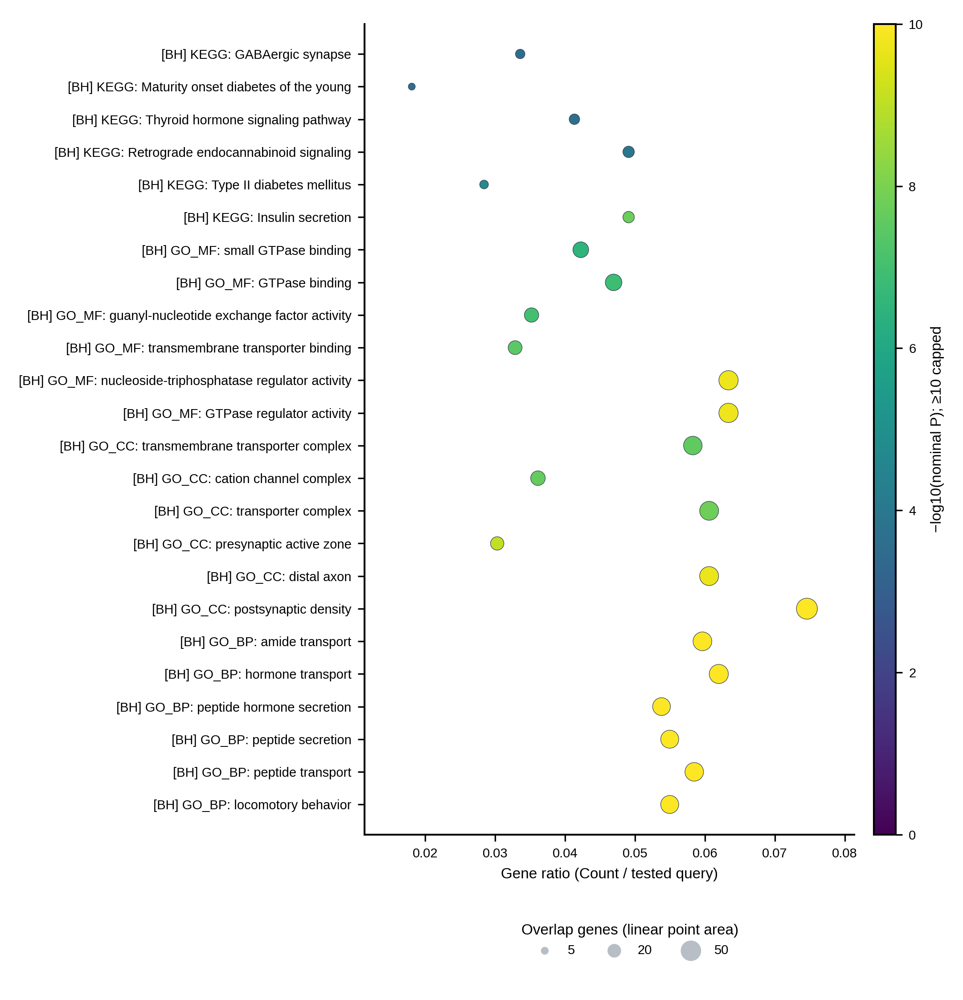
生物学意义：比较标注基因集的命中比例与现有统计支持。
数据分布特征：完整已显示24条；GeneRatio有真实query分母，面积线性Count、viridis固定0–10。
最终结论：用于marker注释，不是PFOS条件推断。
原生PDF · 执行回执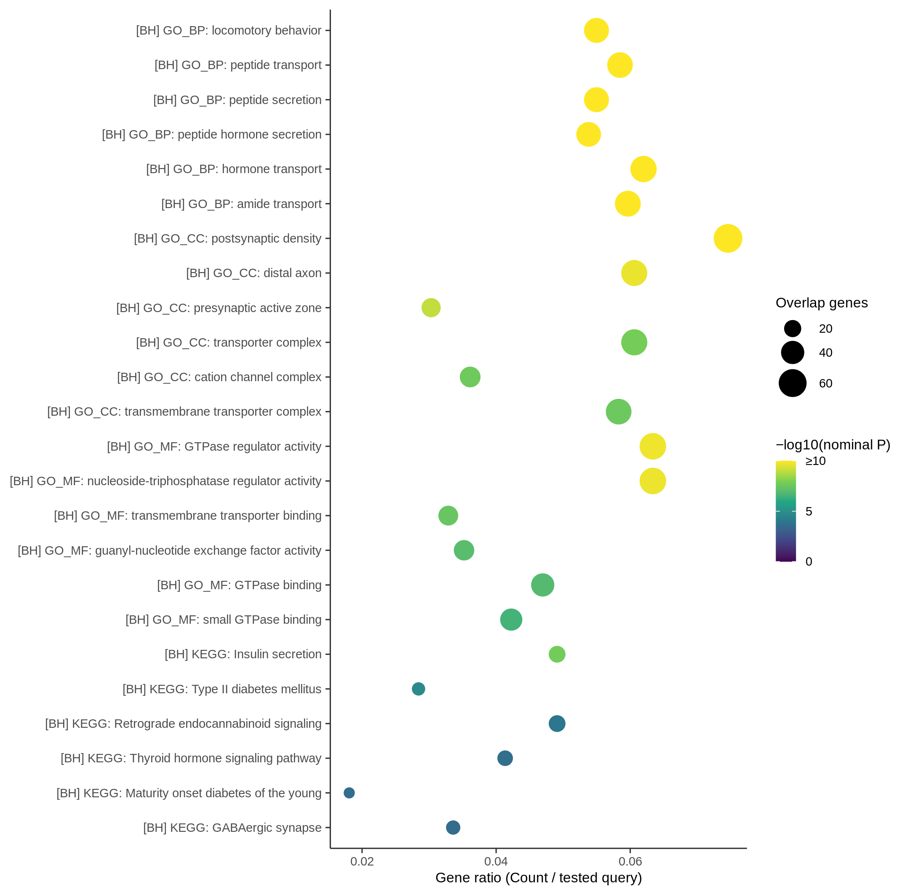
生物学意义：同一源表的R版式候选。
数据分布特征：与Python同一真实ORA表和变量语义；项目选一种实现冻结。
最终结论：候选版式执行不代表论文上游复现。
原生PDF · 执行回执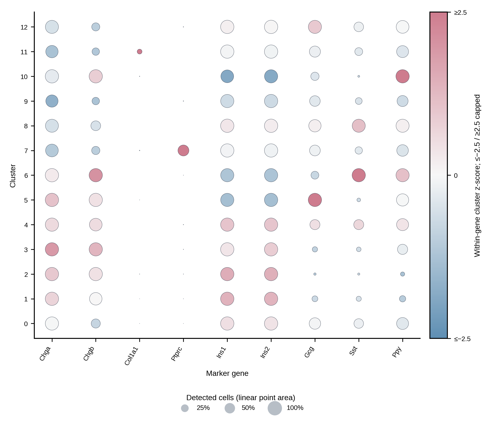
生物学意义：联合呈现表达强度与捕获细胞检出比例。
数据分布特征：预声明marker白名单实际存在的9基因×13群；颜色为原标准化表达，面积为真实检出比例。
最终结论：群注释证据，不补条件显著性。
原生PDF · 执行回执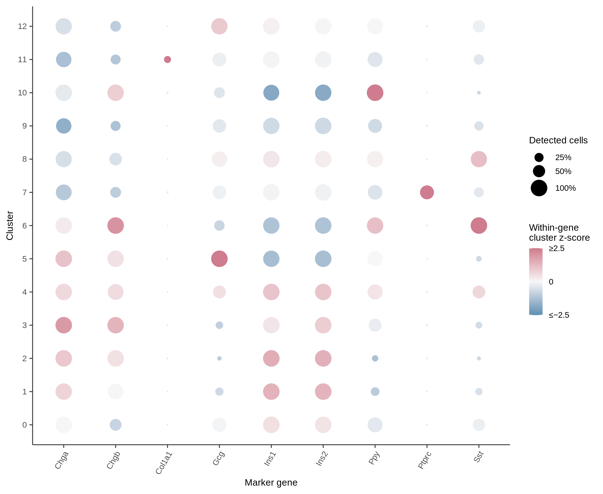
生物学意义：同一marker证据的R版式候选。
数据分布特征：固定名称群序0–12、零中心±2.5色阶、线性检出面积。
最终结论：与ORA点图区分统计语义。
原生PDF · 执行回执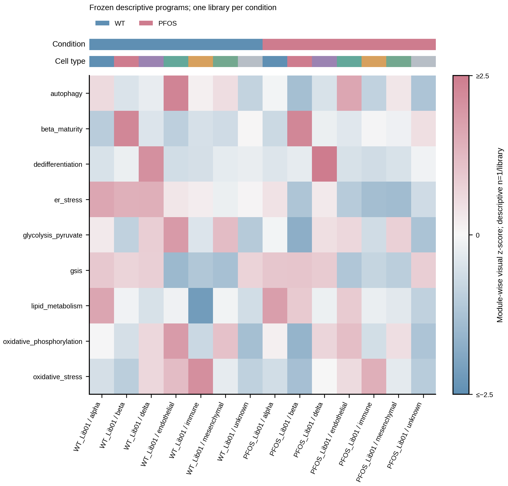
生物学意义：在一张图中对齐多程序和细胞背景。
数据分布特征：9程序×2文库×7类型；现有visual_zscore不重算，注释条固定身份色。
最终结论：每条件一文库，仅描述定位。
原生PDF · 执行回执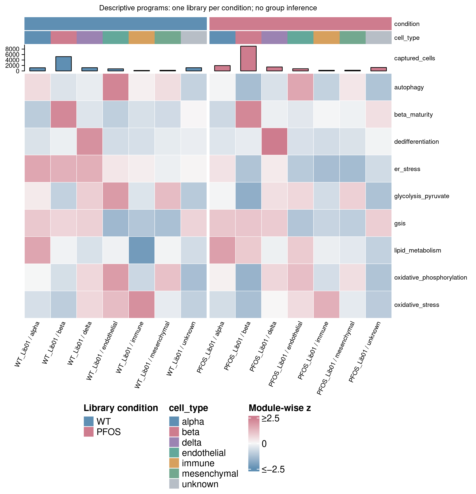
生物学意义：增加捕获细胞数，帮助判断程序位置和信息量。
数据分布特征：同一126行程序源表，另带实际捕获细胞数柱和两层注释。
最终结论：细胞数不是独立动物数，不创建组差异检验。
原生PDF · 执行回执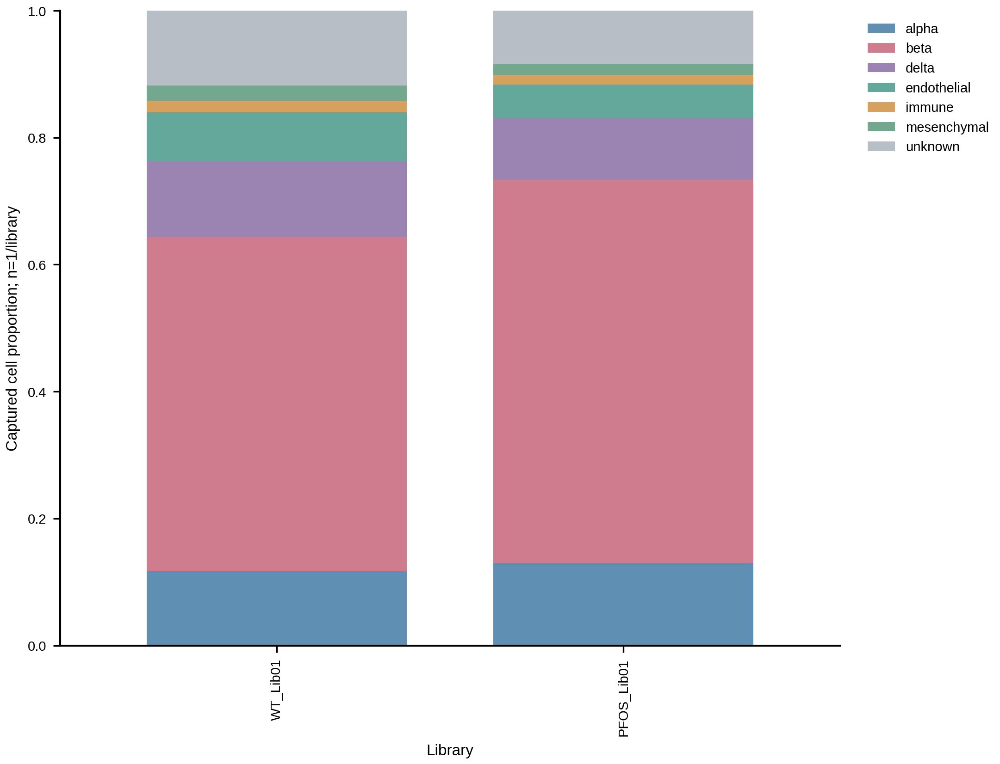
生物学意义：检查各文库捕获的细胞类型分布。
数据分布特征：实际14个library×celltype比例；类别固定，完整组成网格不补零。
最终结论：捕获组成不是动物级组织丰度。
原生PDF · 执行回执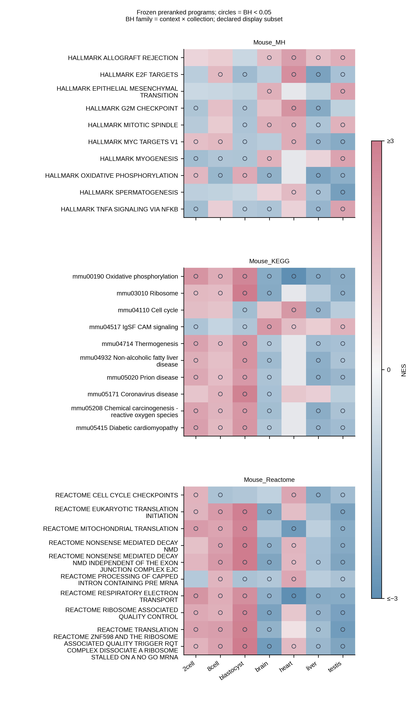
生物学意义：对齐七背景、三个基因集集合的既有排序富集方向。
数据分布特征：实际PFOS整合dry-run：完整9777行保留；每集合按跨context最小既有BH取10 pathways、全部contexts；NES±3，圈示族内BH<0.05。
最终结论：显示子集不代表全局无偏发现；不同背景独立估计，无跨阶段同一动物配对。
原生PDF · 执行回执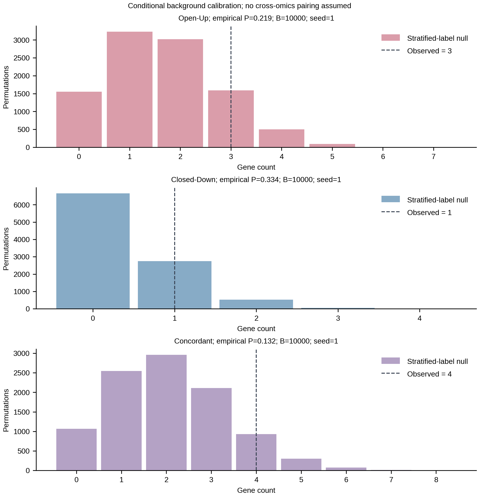
生物学意义：将三类观察重叠放到条件背景零分布中评估。
数据分布特征：实际PFOS整合dry-run冻结30000条null、3项既有经验P与B=10000；不重算置换或P。
最终结论：校准现有背景偏倚，不证明跨组学调控或因果。
原生PDF · 执行回执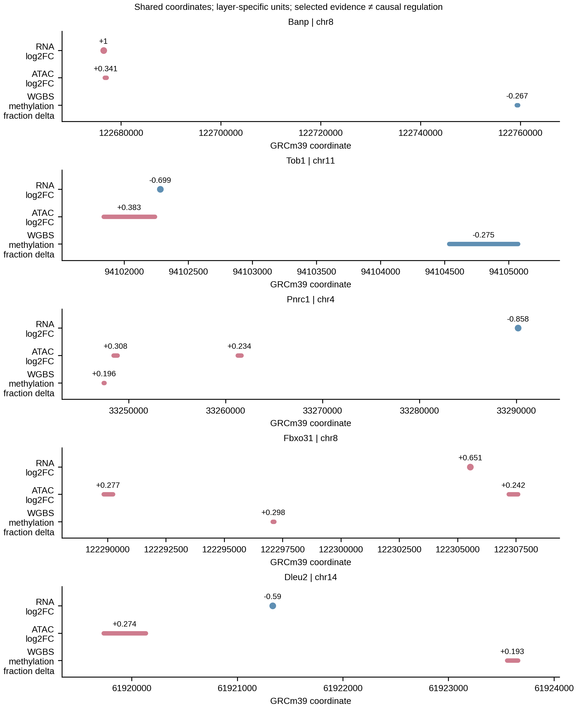
生物学意义：核对RNA、ATAC和WGBS是否确实在同一坐标邻域提供证据。
数据分布特征：实际PFOS整合dry-run17条、5候选；共享GRCm39坐标，图上逐条保留本层效应单位。
最终结论：selected evidence，未检验层与零效应不混同；不是样本配对或因果轨迹。
原生PDF · 执行回执